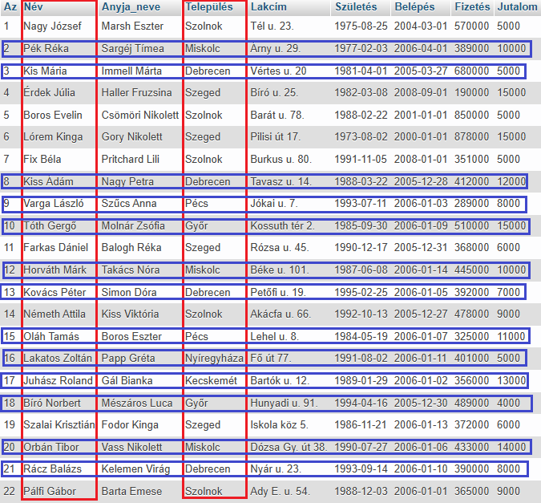
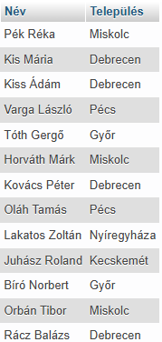
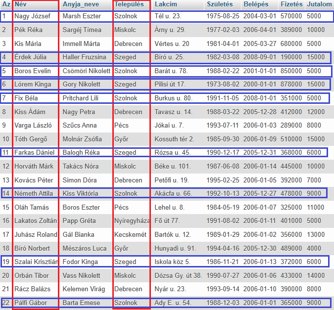
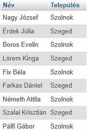
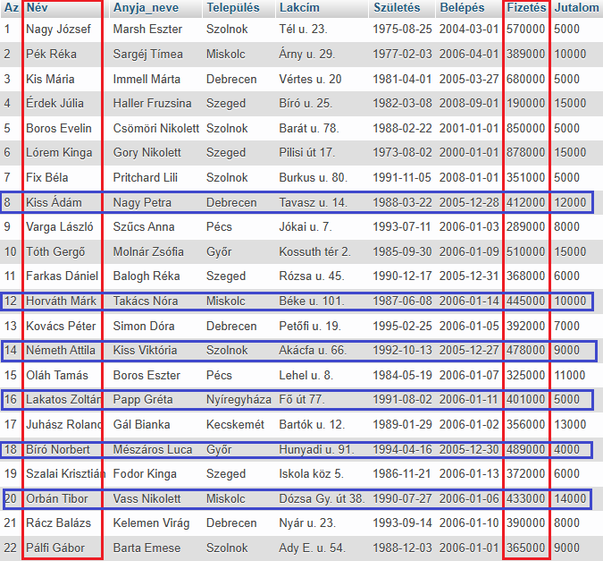
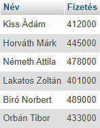
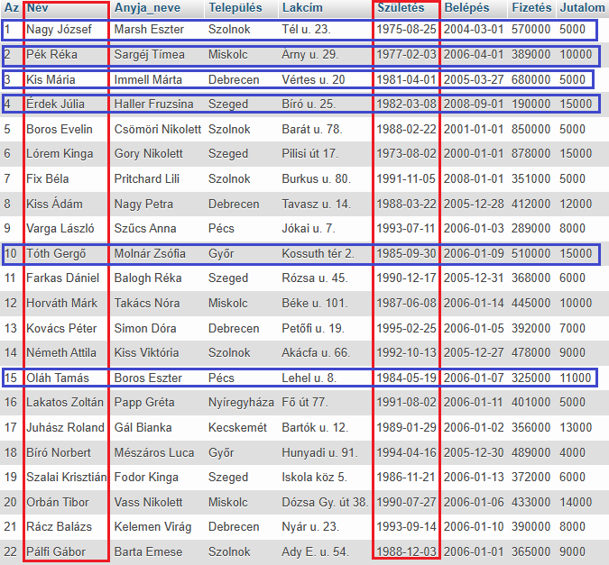
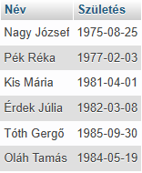

A BETWEEN operátort egy WHERE utasításon belül arra használjuk, hogy ellenőrizzük, egy megadott oszlop (mező) értéke beleesik-e egy megadott tartományba.
A tartomány inkluzív - a tartomány kezdő és végértékei is szerepelnek az eredményekben.
Az értékek lehetnek számok, szöveg (string) vagy dátumok.
Használhatjuk a NOT operátorral együtt is. Ebben az esetben a nem egyezést vizsgáljuk.
SELECT Név, Település
FROM dolgozók
WHERE Település
BETWEEN "Debrecen"
AND "Pécs";


Látható, hogy az eredménytábla a kiválasztott mezőkből áll.
Míg a SELECT az oszlopokra (mező), addig a WHERE a sorokra (rekord) szűr. A kettő metszete adja vissza a eredménytáblát.
A Település oszlopban (mező) keresi a szűrő feltételnek megfelelő értékeket!
SELECT Név, Település
FROM dolgozók
WHERE Település
NOT BETWEEN "Debrecen"
AND "Pécs";


Látható, hogy az eredménytábla a kiválasztott mezőkből áll.
Míg a SELECT az oszlopokra (mező), addig a WHERE a sorokra (rekord) szűr. A kettő metszete adja vissza a eredménytáblát.
A Település oszlopban (mező) keresi a szűrő feltételnek megfelelő értékeket!
SELECT Név, Fizetés
FROM dolgozók
WHERE Fizetés
BETWEEN 400000
AND 500000;


Látható, hogy az eredménytábla a kiválasztott mezőkből áll.
Míg a SELECT az oszlopokra (mező), addig a WHERE az oszlopkra szűr. A kettő metszete adja vissza a eredménytáblát.
A Jutalom oszlopban (mező) keresi a szűrő feltételnek megfelelő értékeket!
SELECT Név, Születés
FROM dolgozók
WHERE Születés
BETWEEN "1973-11-05"
AND "1986-11-05";


Látható, hogy az eredménytábla a kiválasztott mezőkből áll.
Míg a SELECT az oszlopokra (mező), addig a WHERE az oszlopkra szűr. A kettő metszete adja vissza a eredménytáblát.
A Születés oszlopban (mező) keresi a szűrő feltételnek megfelelő értékeket!